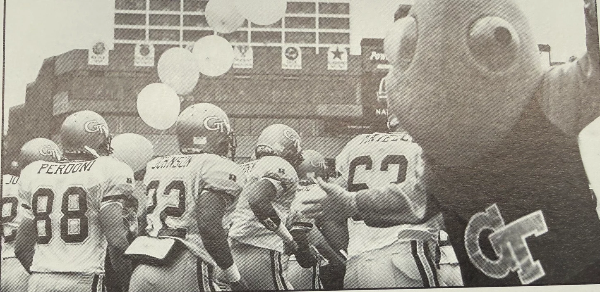

Who keeps the
traditions going?
How have students kept up and changed Georgia Tech’s traditions over time through football?

If you’ve been to a home game at Bobby Dodd Stadium, you’ve probably seen the same few things happen every time. A gold and white 1930 Ford Model A drives onto the field with the team following it, Buzz gets the crowd going, and the student section sings a fight song that’s over 100 years old. A lot of us know these traditions really well, but not as many of us know where they came from or who kept them going.
Students raised money, built things, drove the car, made the costume, and showed up to sing, even in seasons when the team wasn’t winning much. We used yearbooks, game programs, student newspapers, slides, and sheet music from the Georgia Tech Archives to follow three of these traditions from their beginnings to today.